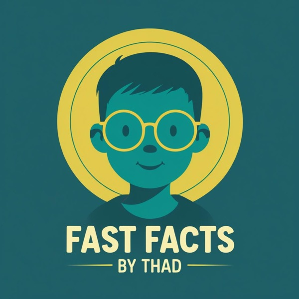

Links
Merch Shop
Support us on Patreon

Fast Facts by Thad is a micro-podcast about different unique animals. Thad has a passion for animals that are not well known, endangered or just plain interesting!